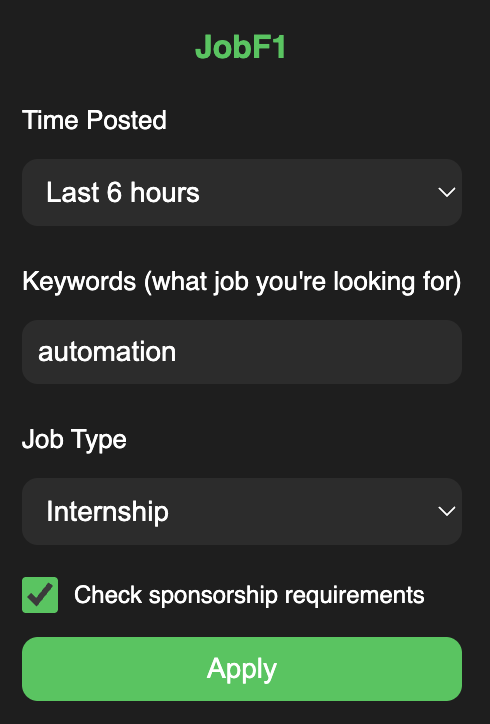
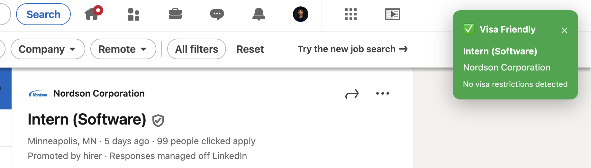
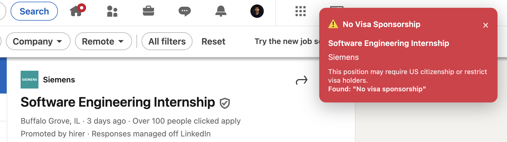

$ cat ~/projects/linkscreen/README.md
LinkScreen

As international students, we often spent hours combing through LinkedIn job postings, only to discover that roles required U.S. citizenship or explicitly refused visa sponsorship.
LinkScreen fixes that. It is a Chrome extension that filters LinkedIn job results by posting time, keywords, and job type while automatically flagging sponsorship restrictions. No more wasted time applying to jobs you are not eligible for.
What It Does
- Detects visa restrictions in job descriptions (citizenship, ITAR, no sponsorship, etc.)
- Filters jobs by posting time (5 minutes to 1 month)
- Supports Boolean keyword search to refine results
- Filters by job type: internships, full-time, or all positions
- Displays clear green/red indicators with reasons for sponsorship status
Example
Searching for Software Engineer Intern:
- Job A → Requires U.S. Citizenship
- Job B → Visa-friendly
- Job C → States "No sponsorship available"
Visual Indicators


Install
Manual Setup (Developer Mode)
- Clone or download the repository
- Open
chrome://extensions/in Chrome - Enable Developer Mode (top-right)
- Click Load unpacked and select the LinkScreen folder
- Pin the extension for quick access
Usage
- Click the LinkScreen icon in Chrome
-
Set your filters:
- Time posted
- Keywords (supports Boolean operators)
- Job type
- Visa sponsorship check
- Apply filters → LinkedIn job listings update instantly
Tech
Chrome Extension
Manifest V3
JavaScript (ES6+)
Content Scripts
Local Storage
Notes
- Works only on LinkedIn job search pages
- Runs fully locally — no external servers or data collection
- Intended for responsible use under LinkedIn's terms of service
License
MIT License